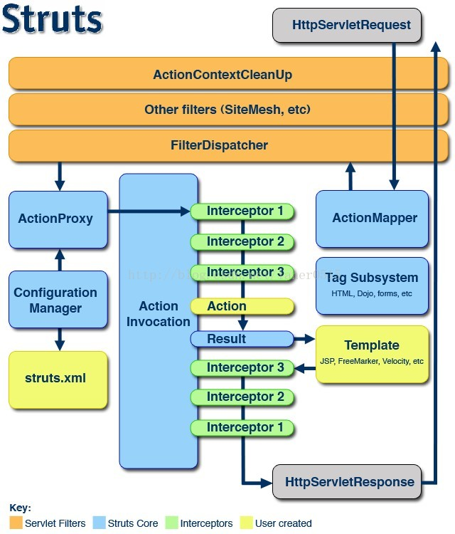

Struts2
一、Struts2 概述
Struts 翻译：支柱
Struts 是流行和成熟的基于 MVC 设计模式的 Web 应用程序框架
POJO（Plain Ordinary Java Object）简单的 Java 对象
MVC 模式
模型视图控制器
Model View Controller
工作原理图

环境
二、Struts2 项目
项目结构
. ├── pom.xml └── src ├── main │ ├── java │ │ └── com │ │ └── mouday │ │ └── HelloWorldAction.java │ ├── resources │ │ └── struts.xml │ └── webapp │ ├── WEB-INF │ │ └── web.xml │ ├── hello.jsp │ └── index.html └── test └── java
1、配置文件
（1）pom.xml
<?xml version="1.0" encoding="UTF-8"?> <project xmlns="http://maven.apache.org/POM/4.0.0" xmlns:xsi="http://www.w3.org/2001/XMLSchema-instance" xsi:schemaLocation="http://maven.apache.org/POM/4.0.0 http://maven.apache.org/xsd/maven-4.0.0.xsd"> <modelVersion>4.0.0</modelVersion> <groupId>org.example</groupId> <artifactId>java-demo-struts</artifactId> <version>1.0-SNAPSHOT</version> <build> <plugins> <!-- tomcat7插件 maven 命令 tomcat7:run 启动项目--> <plugin> <groupId>org.apache.tomcat.maven</groupId> <artifactId>tomcat7-maven-plugin</artifactId> <version>2.2</version> <configuration> <port>8080</port> <path>/</path> <uriEncoding>UTF-8</uriEncoding> <!--添加忽略war包检查标签，则可以让tomcat7：run指令正常启动tomcat--> <ignorePackaging>true</ignorePackaging> <contextFile>src/main/webapp/WEB-INF/web.xml</contextFile> <contextReloadable>true</contextReloadable> </configuration> </plugin> </plugins> </build> <!-- https://mvnrepository.com/artifact/org.apache.struts/struts2-core --> <dependencies> <dependency> <groupId>org.apache.struts</groupId> <artifactId>struts2-core</artifactId> <version>2.5.22</version> </dependency> <!-- https://mvnrepository.com/artifact/javax.servlet/javax.servlet-api --> <dependency> <groupId>javax.servlet</groupId> <artifactId>javax.servlet-api</artifactId> <version>4.0.1</version> <scope>provided</scope> </dependency> </dependencies> </project>
（2）src/main/webapp/WEB-INF/web.xml
<?xml version="1.0" encoding="utf-8" ?> <web-app> <display-name>Hello</display-name> <filter> <filter-name>struts2</filter-name> <filter-class>org.apache.struts2.dispatcher.filter.StrutsPrepareAndExecuteFilter</filter-class> </filter> <filter-mapping> <filter-name>struts2</filter-name> <url-pattern>/*</url-pattern> </filter-mapping> <welcome-file-list> <welcome-file>index.html</welcome-file> </welcome-file-list> </web-app>
（3）src/main/resources/struts.xml
<?xml version="1.0" encoding="utf-8" ?> <!DOCTYPE struts PUBLIC "-//Apache Software Foundation//DTD Struts Configuration 2.5//EN" "http://struts.apache.org/dtds/struts-2.5.dtd"> <struts> <package name="default" namespace="/" extends="struts-default"> <action name="HelloWorldAction" class="com.mouday.HelloWorldAction"> <result name="">/hello.jsp</result> </action> </package> </struts>
2、Action
src/main/java/com/mouday/HelloWorldAction.java
package com.mouday; import com.opensymphony.xwork2.ActionSupport; public class HelloWorldAction extends ActionSupport { @Override public String execute() throws Exception { System.out.println("hello action"); return SUCCESS; } }
3、视图文件
src/main/webapp/index.html
<!DOCTYPE html> <html lang="en"> <body> hi </body> </html>
src/main/webapp/hello.jsp
<!DOCTYPE html> <html lang="en"> <body> hello action jsp </body> </html>
4、访问测试
GET http://localhost:8080/ hi GET http://localhost:8080/HelloWorldAction hello action jsp
三、核心文件
web.xml struts.xml struts.properties 全局属性文件，自动加载
struts.properties 常用配置
# struts.xml改动后重新加载重载 默认 false struts.configuration.xml.reload=true # 打开开发模式 默认 false struts.devMode=true # 设置浏览器缓存静态页面 默认true struts.serve.static.browserCache=false # 被struts处理的请求后缀 struts.action.extension=action,do # 服务器运行时端口号 struts.url.http.port=8080
四、深入 Struts2
1、访问 Servlet API 方式
- ActionContext
- 实现 Aware 接口
- ServletActionContext
2、Action 搜索顺序
逐级向上查找
3、动态方法调用
（1）指定 method 属性
package com.mouday; import com.opensymphony.xwork2.ActionSupport; public class HelloWorldAction extends ActionSupport { @Override public String execute() throws Exception { System.out.println("hello action"); return SUCCESS; } public String add(){ System.out.println("add"); return SUCCESS; } }
struts.xml(简化)
<struts> <package name="default" namespace="/" extends="struts-default"> <action name="add" class="com.mouday.HelloWorldAction" method="add"> <result name="">/add.jsp</result> </action> </package> </struts>
访问结果
GET http://localhost:8080/add.action add result
（2）感叹号方式（不推荐）
配置文件
<?xml version="1.0" encoding="utf-8" ?> <!DOCTYPE struts PUBLIC "-//Apache Software Foundation//DTD Struts Configuration 2.5//EN" "http://struts.apache.org/dtds/struts-2.5.dtd"> <struts> <package name="default" namespace="/" extends="struts-default"> <global-allowed-methods>regex:.*</global-allowed-methods> <action name="HelloWorldAction" class="com.mouday.HelloWorldAction"> <result>/hello.jsp</result> <result name="add">/add.jsp</result> </action> </package> <constant name="struts.enable.DynamicMethodInvocation" value="true"/> </struts>
GET http://localhost:8080/HelloWorldAction!add.action add result
（3） 通配符方式
<?xml version="1.0" encoding="utf-8" ?> <!DOCTYPE struts PUBLIC "-//Apache Software Foundation//DTD Struts Configuration 2.5//EN" "http://struts.apache.org/dtds/struts-2.5.dtd"> <struts> <package name="default" namespace="/" extends="struts-default"> <global-allowed-methods>regex:.*</global-allowed-methods> <action name="*_*" method="{2}" class="com.mouday.{1}Action"> <result name="{2}">/{2}.jsp</result> </action> </package> <constant name="struts.enable.DynamicMethodInvocation" value="true"/> </struts>
GET http://localhost:8080/HelloWorldAction_add.action add result
4、指定多个配置文件
<include file="helloworld.xml" />
配置示例
struts.xml
<?xml version="1.0" encoding="utf-8" ?> <!DOCTYPE struts PUBLIC "-//Apache Software Foundation//DTD Struts Configuration 2.5//EN" "http://struts.apache.org/dtds/struts-2.5.dtd"> <struts> <include file="hello.xml"/> <constant name="struts.enable.DynamicMethodInvocation" value="true"/> <!-- 以防乱码--> <constant name="struts.i18n.encoding" value="UTF-8"/> </struts>
hello.xml
<?xml version="1.0" encoding="utf-8" ?> <!DOCTYPE struts PUBLIC "-//Apache Software Foundation//DTD Struts Configuration 2.5//EN" "http://struts.apache.org/dtds/struts-2.5.dtd"> <struts> <package name="default" namespace="/" extends="struts-default"> <global-allowed-methods>regex:.*</global-allowed-methods> <action name="*_*" method="{2}" class="com.mouday.{1}Action"> <result name="{2}">/{2}.jsp</result> </action> </package> </struts>
访问
GET http://localhost:8080/HelloWorld_add.action add result
5、默认 Action
<?xml version="1.0" encoding="utf-8" ?> <!DOCTYPE struts PUBLIC "-//Apache Software Foundation//DTD Struts Configuration 2.5//EN" "http://struts.apache.org/dtds/struts-2.5.dtd"> <struts> <package name="default" namespace="/" extends="struts-default"> <default-action-ref name="index" /> <action name="index"> <result>/error.jsp</result> </action> </package> </struts>
访问
GET http://localhost:8080/xxxx.action error jsp
6、Struts2 后缀
（1）struts.xml
<constant name="struts.action.extension" value="html" />
（2）struts.properties
struts.action.extension=action,do
（3）web.xml
<filter> <filter-name>struts2</filter-name> <filter-class>org.apache.struts2.dispatcher.filter.StrutsPrepareAndExecuteFilter</filter-class> <init-param> <param-name>struts.action.extension</param-name> <param-value>do</param-value> </init-param> </filter>
7、接收参数
（1）Action 属性
Action 类
package com.mouday; import com.opensymphony.xwork2.ActionSupport; public class LoginAction extends ActionSupport { private String username; public String getUsername() { return username; } public void setUsername(String username) { this.username = username; } @Override public String execute() throws Exception { System.out.println(username); return SUCCESS; } }
路由配置
<action name="login" class="com.mouday.LoginAction"> <result>/login.html</result> </action>
表单页面
<form action="login.action" method="post"> <input type="text" name="username" /> <input type="submit" /> </form>
（2）Domain Model
新建 User 类
package com.mouday.bean; public class User { private String username; public String getUsername() { return username; } public void setUsername(String username) { this.username = username; } }
Action
package com.mouday.action; import com.mouday.bean.User; import com.opensymphony.xwork2.ActionSupport; public class LoginAction extends ActionSupport { private User user; public User getUser() { return user; } public void setUser(User user) { this.user = user; } @Override public String execute() throws Exception { System.out.println(user.getUsername()); return SUCCESS; } }
登录表单
<form action="login.action" method="post"> <input type="text" name="user.username" /> <input type="submit" /> </form>
（3）ModelDriven
Action
package com.mouday.action; import com.mouday.bean.User; import com.opensymphony.xwork2.ActionSupport; import com.opensymphony.xwork2.ModelDriven; public class LoginAction extends ActionSupport implements ModelDriven<User> { private User user = new User(); @Override public String execute() throws Exception { System.out.println(user.getUsername()); return SUCCESS; } public User getModel() { return user; } }
表单
<form action="login.action" method="post"> <input type="text" name="username" /> <input type="submit" /> </form>
（4）接收列表类型
User 类
package com.mouday.bean; import java.util.List; public class User { private String username; private List<String> list; public List<String> getList() { return list; } public void setList(List<String> list) { this.list = list; } public String getUsername() { return username; } public void setUsername(String username) { this.username = username; } }
Action
package com.mouday.action; import com.mouday.bean.User; import com.opensymphony.xwork2.ActionSupport; import com.opensymphony.xwork2.ModelDriven; public class LoginAction extends ActionSupport implements ModelDriven<User> { private User user = new User(); @Override public String execute() throws Exception { System.out.println(user.getUsername()); System.out.println(user.getList()); return SUCCESS; } public User getModel() { return user; } }
表单
<form action="login.action" method="post"> <input type="text" name="username" /> <input type="text" name="list[0]" /> <input type="text" name="list[1]" /> <input type="submit" /> </form>
8、处理结果类型
Struts2 处理流程
用户请求 -> Stuts框架 -> 控制器Action -> Stuts框架 -> 视图资源
result 如果省略 name，则默认是 success
<result name="success">/success.jsp</result> <!-- 等价于 --> <result>/success.jsp</result>
处理结果类型：
- SUCCESS 正确执行，默认视图
- NONE 正确执行，不返回视图
- ERROR 执行失败
- LOGIN 登录视图
- INPUT 参数输入界面
Action
package com.mouday.action; import com.mouday.bean.User; import com.opensymphony.xwork2.ActionSupport; import com.opensymphony.xwork2.ModelDriven; public class LoginAction extends ActionSupport implements ModelDriven<User> { private User user = new User(); @Override public String execute() throws Exception { System.out.println(user.getUsername()); System.out.println(user.getList()); return SUCCESS; } @Override public void validate() { if (user.getUsername() == null || "".equals(user.getUsername()) ) { addFieldError("username", "用户名不能为空"); } } public User getModel() { return user; } }
配置
<?xml version="1.0" encoding="utf-8" ?> <!DOCTYPE struts PUBLIC "-//Apache Software Foundation//DTD Struts Configuration 2.5//EN" "http://struts.apache.org/dtds/struts-2.5.dtd"> <struts> <package name="default" namespace="/" extends="struts-default"> <action name="login" class="com.mouday.action.LoginAction"> <result>/login.jsp</result> <result name="input">/login.jsp</result> </action> </package> </struts>
登录框
<%@ page language="java" contentType="text/html; charset=UTF-8" pageEncoding="UTF-8"%> <%@ taglib prefix="s" uri="/struts-tags" %> <form action="login.action" method="post"> <input type="text" name="username"/> <!-- 显示错误提示 --> <s:fielderror name="username"></s:fielderror> <input type="text" name="list[0]"/> <input type="text" name="list[1]"/> <input type="submit" /> </form>
9、局部结果和全局结果
OGNL
<result name=""> <param name="location">resource</param> </result>